Стрибок Сергія Бубки
1993 року український легкоатлет Сергій Бубка став першим у світі, хто стрибнув вище шести метрів. Рекорд спортсмена з жердиною в закритому приміщенні - 6,15 м, і побили його лише у 2014 році.
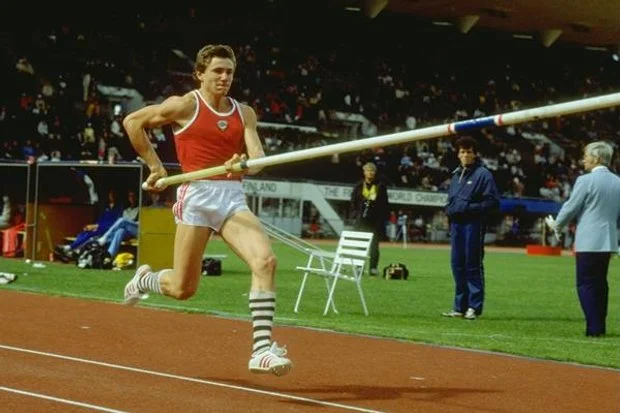Конституція України
28 червня 1996 року Верховна Рада ухвалила Конституцію незалежної України. У документі було закріплено правові основи нашої держави, її суверенітет і територіальну цілісність.
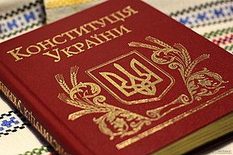Введення в обіг гривні
25 серпня 1996 року президент України Леонід Кучма підписав указ Про грошову реформу в Україні. З 2 до 16 вересня з обігу вивели купоно-карбованці. З 17 вересня 1996 року гривня стала єдиною законною грошовою одиницею України, офіційний курс якої НБУ встановив на рівні 1,76 гривні за 1 долар США.
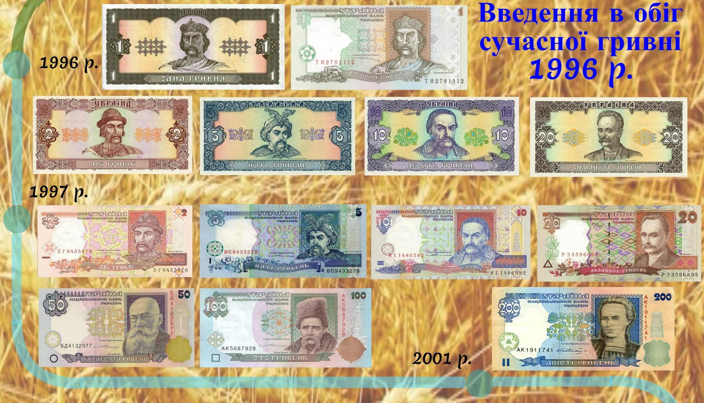Дебют України на літній Олімпіаді-1996
Україну представляли 231 спортсмен, які здобули 23 медалі, дев'ять із них - золоті! Цей результат і досі залишається найкращим за час виступів України на Олімпіадах. Тодішньою зіркою була гімнастка Лілія Подкопаєва, яка виборола два "золота".
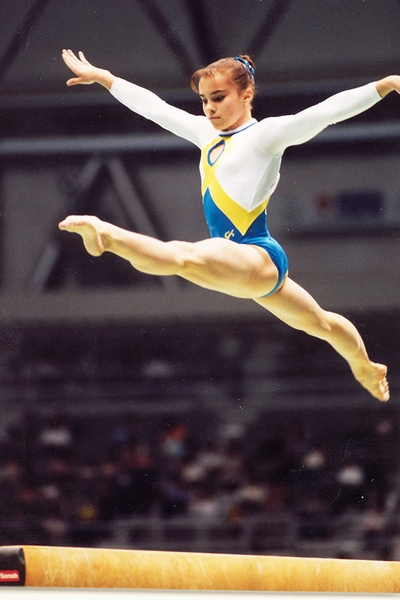Українець у космосі
Сталося це 1997 року - Леонід Каденюк, перший космонавт Незалежної України, здійснив 16-добовий політ на американському шатлі "Колумбія".
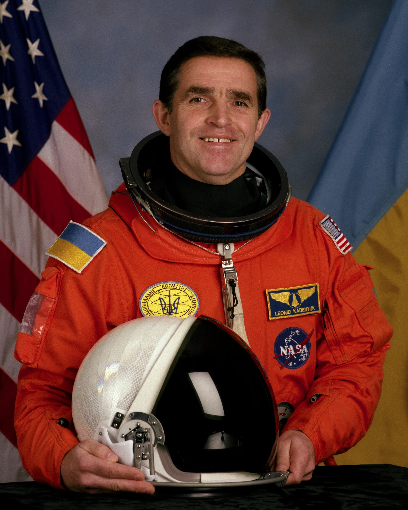Тріумф на "Євробаченні"
Без зайвих слів. 2004 року Руслана принесла Україні перше місце, а трек "Дикі танці" європейці наспівують досі.
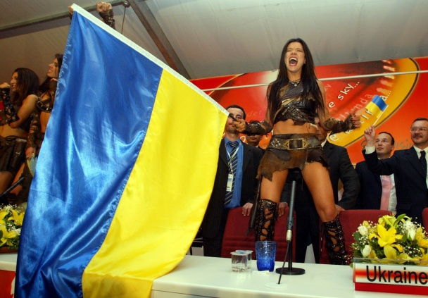"Золотий м'яч" Андрія Шевченка
2004 року український футболіст Андрій Шевченко став найкращим футболістом Європи і здобув "Золотий м’яч".
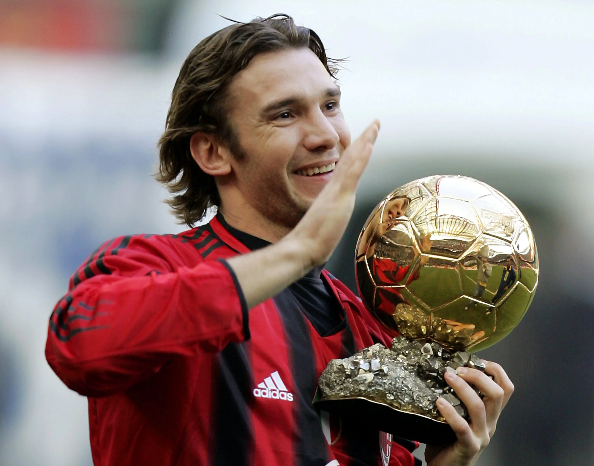"Мрія" у Книзі рекордів Гіннеса
Наша "пташка" була найбільшим і найпотужнішим літаком у світі. У 2009 році вона потрапила до Книги рекордів Гіннеса, ставши абсолютним світовим рекордсменом у важкій вазі. Сьогодні як ніколи сумуємо за нею й ніколи не пробачимо росіянам за цю втрату ( АН-225 було знищено на початку повномасштабного вторгнення. Ракета влучила в ангар в Гостомелі, де знаходилася "Мрія").
Світова слава братів Кличко
2011 року Володимир Кличко переміг британця Девіда Хея, після чого брати стали власниками чотирьох поясів чемпіонів світу у важкій вазі.
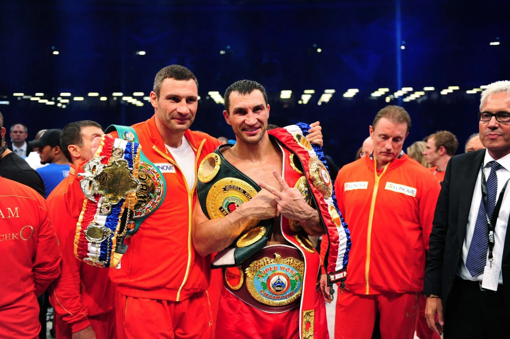Євро-2012
У 2012-му Україна приймала Чемпіонат Європи з футболу. Відразу чотири українські міста були залучені до проведення матчів - Київ, Львів, Донецьк та Харків.
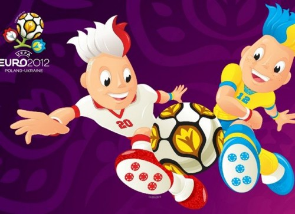Українка на Евересті
2016 року Ірина Галай підкорила найвищу вершину світу Еверест і стала першою українкою, якій це вдалося.
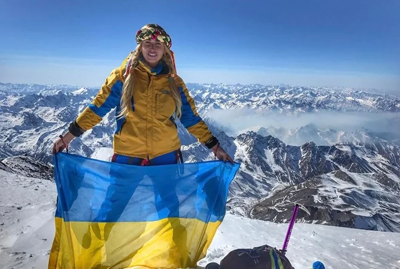Перемога Джамали на "Євробаченні"
Цього ж року Джамала підкорила світ проникливою піснею "1944" та здобула для України перше місце.
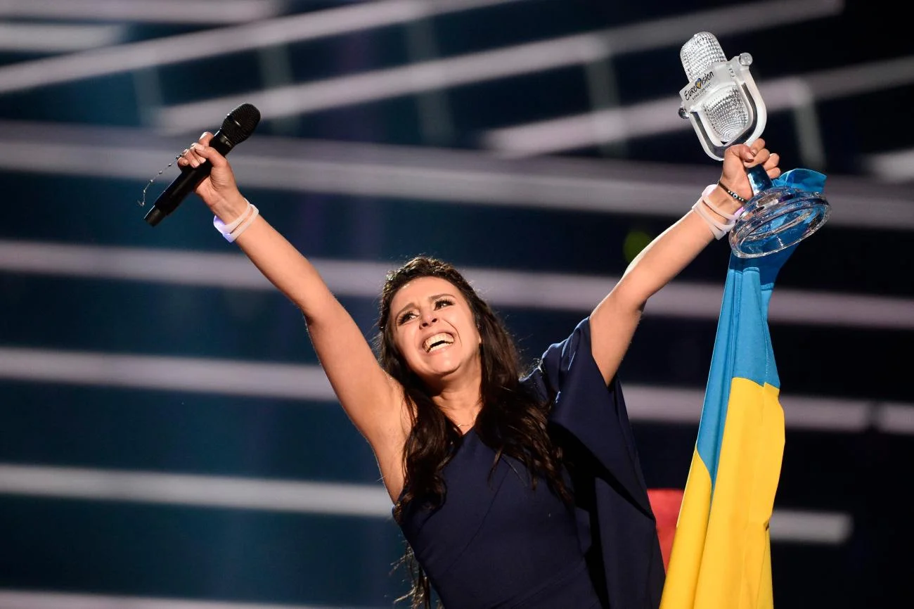Безвіз
У 2017 українці отримали можливість подорожувати без віз 30 країнами Європи за допомогою біометричного закордонного паспорта.
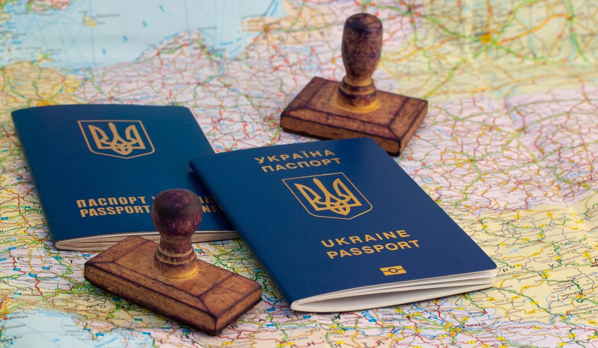Закон про державну мову
За 400 років російського панування на українських землях мову забороняли понад 120 разів. 16 липня 2019 року набув чинності Закон про державну мову. Він передбачає, що єдиною державною мовою в Україні є українська, і вона обов’язкова для органів державної влади та громадських сфер.
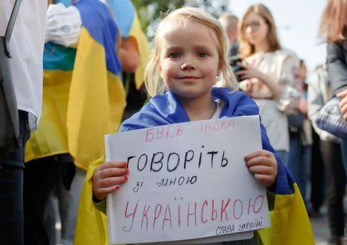ДІЯ
Мобільний застосунок запущено в 2020 році. Завдяки йому Україна стала першою країною у світі, що запустила цифрові паспорти та законодавчо прирівняла їх до звичайних документів. Це не просто важлива подія в історії сучасної України. Це великий крок до впровадження режиму "без паперу". Усі важливі проблеми можна вирішити онлайн: сплатити штрафи; отримати довідку про несудимість чи низку інших ліцензій, дозволів, витягів із реєстрів; відкрити ФОП; завантажити сертифікат Covid; мати під рукою український паспорт, закордонний, військовий квиток, студентський, водійське посвідчення, свідоцтво про народження дитини; здійснювати банківські операції. Кілька країн уже теж розглядають можливість запустити аналог "ДІЇ" у себе.
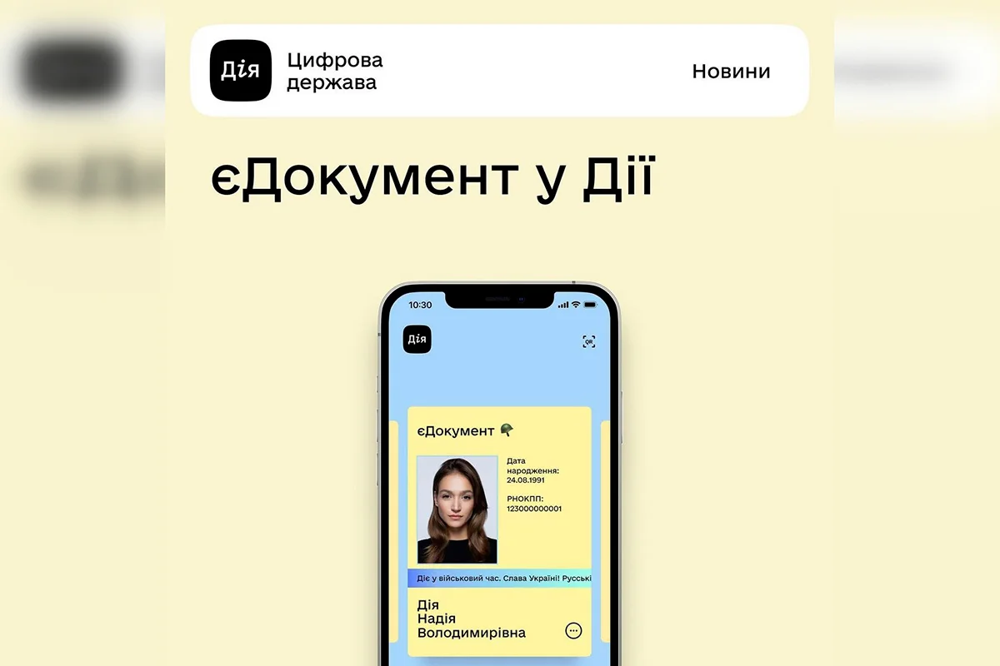Вихід України в 1/4 фіналу Євро-2020 і переможний гол Артема Довбика
30 червня 2021 року збірна України вперше у своїй історії вийшла до 1/4 фіналу чемпіонату Європи з футболу, обігравши Швецію з рахунком 2:1. Гравець Дніпра-1 Артем Довбик став автором переможного гола у ворота шведів. У компенсований час до другого екстратайму він вирвав для України путівку в 1/4 фіналу Євро-2020.
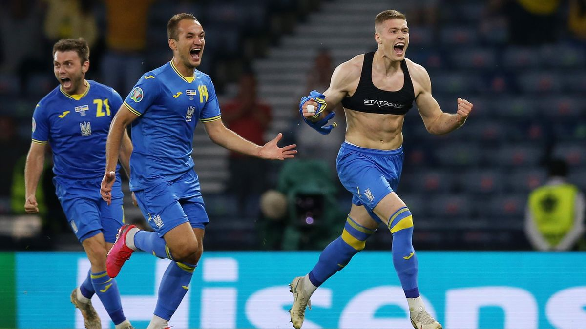Перемога Kalush Orchestra на "Євробачення 2022"
У розпал великого повномасштабного вторгнення Україна виборює перемогу на музичному конкурсі з україномовних треком "Stefania". На сцені лідер гурту Олег Псюк, всупереч аполітичності "Євробачення", закликав світ врятувати "азовців", які тоді перебували на "Азовсталі" у Маріуполі.
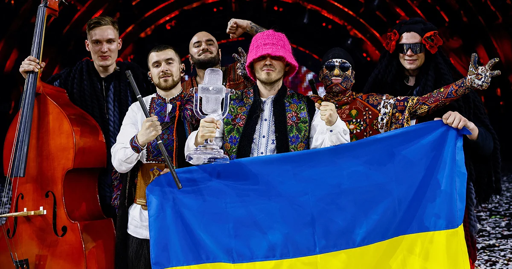Декомунізації в Україні
Початок декомунізації - 2015 рік. Утім, остаточно взялися за "очищення" української культури лише в 2022-му після початку вторгнення. Улітку 2023 року декомунізовано монумент "Батьківщина-мати": радянський герб на щиті замінено на Тризуб.
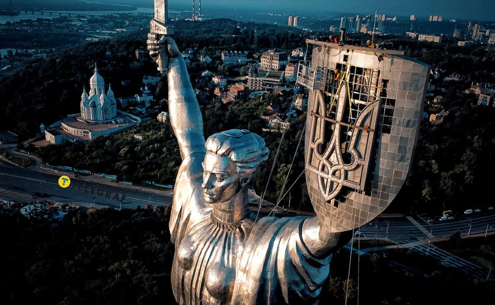